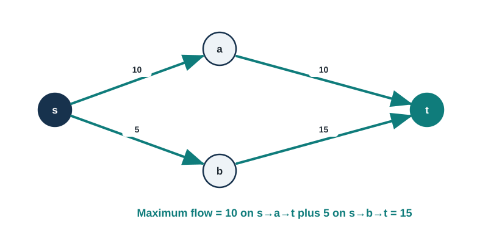
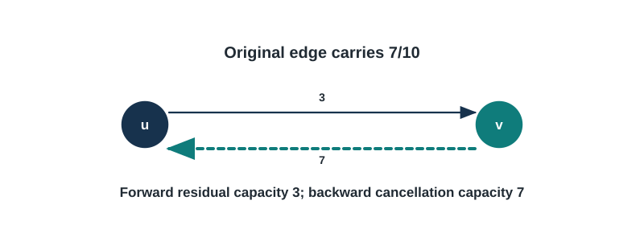
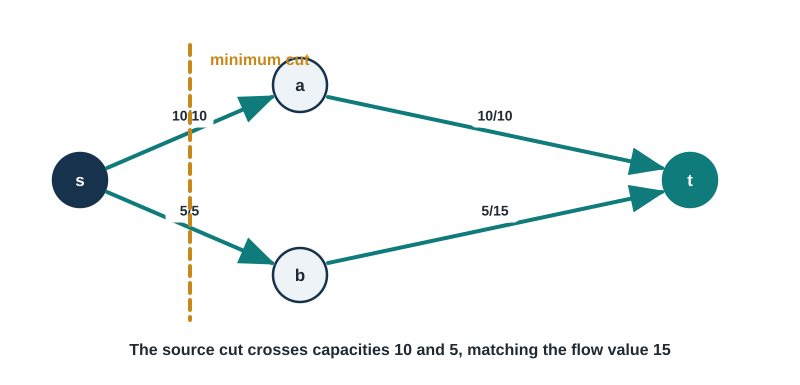
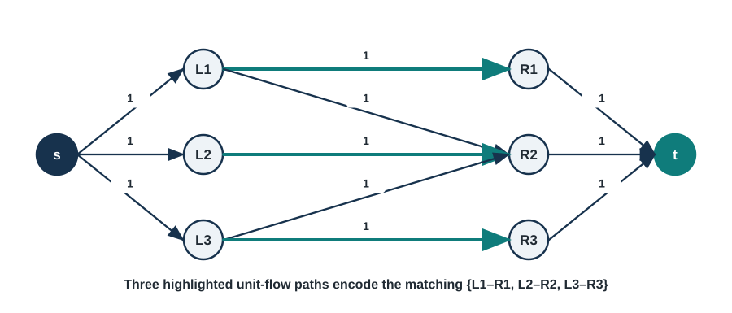

9 Advanced Graph Algorithms - Making Things Flow
When Pipes, Traffic, and Romance All Follow the Same Rules
“You can’t push a gallon through a pint tube.” - Old engineering wisdom
“But you can prove mathematically that you’re pushing the maximum possible gallon through your network of pint tubes.” - Modern computer science
9.1 Introduction: The Universal Language of Flow
A useful unifying fact is that the same maximum-flow model used for transportation capacity also supports:
- Matches medical students to residency programs
- Routes data through the internet
- Determines how to cut an image into foreground and background
- Schedules flights for airlines
- Assigns teachers to classrooms
How is this possible? Because all these problems are secretly about flow.
Think about water flowing through pipes. You have a source (maybe a water tower) and a sink (maybe a city). Between them is a network of pipes, each with a maximum capacity. The question is simple: What’s the maximum amount of water you can push through this network?
This question, first studied seriously in the 1950s, turned out to be one of the most useful questions in all of computer science. The algorithms we’ll learn in this chapter power everything from Google’s data centers to the app that matched you with your college roommate.
And here’s the beautiful part: we’re going to prove that finding maximum flow is exactly equivalent to finding the smallest bottleneck in the network. Two completely different-sounding problems, one elegant solution.
We begin with feasible flows and residual networks, then build toward matching and allocation applications.
9.2 Network Flow: The Big Picture
9.2.1 What is a Flow Network?
Imagine you’re designing the plumbing for a new building. You have:
- A water source (the main line from the city)
- A destination (the building’s water tank)
- A bunch of pipes connecting them, each with a maximum flow rate
Your job: figure out the maximum gallons per minute you can deliver.
In graph terms, a flow network is just a directed graph with some extra information:
- Source vertex (s): Where stuff comes from
- Sink vertex (t): Where stuff goes to
- Capacity on each edge: The maximum “stuff” that can flow through that edge
The “stuff” could be water, cars, data packets, electricity, or (as we’ll see later) something completely abstract like “matching potential.”
9.2.2 The Two Sacred Rules of Flow
Flow has to follow two non-negotiable rules:
Rule 1: Don’t Break the Pipes (Capacity Constraint)
You can’t push more flow through a pipe than it can handle. If an edge has capacity 10, you can send anywhere from 0 to 10 units through it, but not 11.
Formally: 0 ≤ f(u,v) ≤ c(u,v) for every edge.
Rule 2: What Goes In Must Come Out (Flow Conservation)
At every vertex except the source and sink, the flow coming in equals the flow going out. Flow can’t magically appear or disappear in the middle of the network.
Think of a busy intersection: if 100 cars per minute enter from all directions, then 100 cars per minute must leave. Cars don’t pile up or vanish at the intersection.
Formally: Σ flow-in = Σ flow-out for every vertex except s and t.
9.2.3 A Simple Example
Let’s look at a tiny network:

Question: What’s the maximum flow from s to t?
First guess: Maybe 25? (10 through the top + 15 through the bottom)
Wrong! Look at edge s→b. It only has capacity 5. So the bottom path can only carry 5 units.
Second guess: 15? (10 through top, 5 through bottom)
Correct! Here’s one way to achieve it: - Send 10 units along s → a → t - Send 5 units along s → b → t - Total: 15 units
Can we do better? Nope! And soon we’ll prove why.
9.2.4 The Genius Idea: The Residual Network
Here’s where things get clever. Imagine you’ve already sent some flow through the network. Now you’re wondering: “Can I push more?”
To answer this, we create something called the residual network. This is a graph that shows: 1. How much more flow you can push along each edge (forward capacity) 2. How much flow you can undo by rerouting (backward capacity)
Wait, undo flow? What?
Yes! This is the key insight. Let’s say you’re already pushing 7 units through an edge with capacity 10. The residual network shows:
- Forward edge: You can push 3 more units (10 - 7 = 3)
- Backward edge: You can “undo” up to 7 units by rerouting that flow elsewhere
The backward edge isn’t about water flowing backward in physical pipes. It’s about our freedom to change our mind about routing decisions.
Concrete example:

If you later find a better path that uses the backward edge from v to u, you’re essentially redirecting some of that flow to a better route.
This idea—that we can undo bad routing decisions—is what makes flow algorithms work!
9.3 The Max-Flow Min-Cut Theorem: One of CS’s Greatest Hits
9.3.1 What’s a Cut?
Imagine taking scissors and cutting your flow network into two pieces: one piece containing the source, one containing the sink. The capacity of the cut is the total capacity of edges you cut.

In this example, cutting between {s,a,b} and {t} means we cut edges a→t and b→t, giving us a cut capacity of 10 + 15 = 25.
Different cuts have different capacities. The minimum cut is the cut with the smallest capacity.
9.3.2 The Theorem That Changes Everything
Max-Flow Min-Cut Theorem (Ford & Fulkerson, 1956):
The maximum amount of flow you can push through a network equals the capacity of the minimum cut.
Read that again. It’s saying that two seemingly different problems—maximizing flow and finding the smallest bottleneck—always give the same answer.
Why is this amazing?
- It proves that when you can’t find any way to increase flow, you’ve found the maximum
- It gives us a way to verify our answer (find the min cut and check its capacity)
- It connects optimization (max flow) with structure (min cut)
- It’s surprising! There’s no obvious reason these two should be equal
Intuition:
Think of a busy highway system. The maximum traffic flow is limited by the narrowest bottleneck. If you removed that bottleneck, traffic would just be limited by the next bottleneck. The minimum cut identifies all the bottlenecks at once.
9.3.3 Finding the Min Cut (It’s Free!)
Once you’ve computed maximum flow, finding the minimum cut is trivial:
- Look at the final residual network
- Find all vertices you can reach from the source
- Everything reachable is on one side of the cut; everything else is on the other side
The edges crossing from the reachable to unreachable vertices form your minimum cut!
Why does this work? If a vertex is still reachable in the residual network, there’s unused capacity toward it. The unreachable vertices are cut off—we’ve maxed out all paths to them.
9.4 Ford-Fulkerson: The Classic Algorithm
9.4.1 The Basic Idea
Ford–Fulkerson has a compact central idea:
Start with zero flow everywhere
While you can find ANY path from source to sink in the residual network:
1. Find the bottleneck (edge with smallest residual capacity)
2. Push that much flow along the path
3. Update the residual network
Return the total flowThat’s it! Find a path, push flow, repeat until no paths remain.
9.4.2 Let’s Trace Through an Example Step by Step
Let’s work through a complete example so you really see how this works:
The trace uses the capacity network stated by the edge list in the implementation below. Each round records its chosen augmenting path, bottleneck, and residual update; this procedural state is retained as text rather than duplicated as an additional static diagram.
Start: Flow everywhere is zero.
Round 1: “I’ll try the path s → v1 → t”
- Bottleneck: min(16, 12) = 12
- Push 12 units
- Update: s→v1 now has flow 12, v1→t has flow 12
- Total flow: 12
Round 2: “Hmm, can I find another path? Yes! s → v1 → v3 → v4 → t”
- Wait, s→v1 already has flow 12 and capacity 16, so residual capacity is 4
- Bottleneck: min(4, 9, 7, 20) = 4
- Push 4 units
- Total flow: 16
Round 3: “Let me try s → v2 → v3 → v4 → t”
- Bottleneck: min(13, 4, 3, 16) = 3 (Note: v3→v4 now has residual capacity 3 because we already pushed 4)
- Push 3 units
- Total flow: 19
Round 4: “What about s → v2 → v4 → t?”
- Bottleneck: min(10, 4, 13) = 4
- Push 4 units
- Total flow: 23
Round 5: “Can I find another path?”
- Nope! All paths to t are saturated or blocked
- Done! Maximum flow = 23
See how we kept finding paths and pushing flow until we couldn’t anymore? That’s the entire algorithm!
9.4.3 Edmonds-Karp: Breadth-First Augmenting Paths
There’s a problem with basic Ford-Fulkerson: which path should we choose?
If you choose paths badly, the algorithm can be horribly slow. In fact, with irrational capacities, it might not even terminate! (This is one of those weird theoretical cases, but it’s important to know.)
Edmonds-Karp obtains a polynomial running-time bound by choosing shortest augmenting paths in the residual graph (Edmonds and Karp 1972):
Always pick the shortest path (in terms of number of edges).
Using BFS to choose augmenting paths yields a polynomial-time guarantee.
Time complexity: \(O(VE^2)\)
This might seem like a small tweak, but it’s huge. By always taking the shortest path, you guarantee that: 1. Each edge appears on at most \(O(VE)\) augmenting paths 2. The algorithm terminates in a reasonable number of steps 3. You don’t get stuck in weird infinite loops
Here’s a complete, production-ready implementation:
from collections import deque, defaultdict
class EdmondsKarp:
"""
Maximum flow using Edmonds-Karp algorithm.
Uses BFS to find shortest augmenting paths.
"""
def __init__(self, n):
"""
Create a flow network with n vertices (numbered 0 to n-1).
"""
self.n = n
# capacity[u][v] = capacity of edge from u to v
self.capacity = defaultdict(lambda: defaultdict(int))
# flow[u][v] = current flow on edge from u to v
self.flow = defaultdict(lambda: defaultdict(int))
# adjacency list (includes both directions for residual graph)
self.adj = defaultdict(set)
def add_edge(self, u, v, cap):
"""
Add edge from u to v with capacity cap.
Args:
u: source vertex
v: destination vertex
cap: capacity (can be fractional)
"""
self.capacity[u][v] += cap # += handles multiple edges
self.adj[u].add(v)
self.adj[v].add(u) # for backward edges in residual graph
def bfs(self, s, t, parent):
"""
Find shortest augmenting path using BFS.
Args:
s: source vertex
t: sink vertex
parent: dict to store the path
Returns:
True if path exists, False otherwise
"""
visited = set([s])
queue = deque([s])
while queue:
u = queue.popleft()
for v in self.adj[u]:
# Check residual capacity
residual = self.capacity[u][v] - self.flow[u][v]
if v not in visited and residual > 0:
visited.add(v)
parent[v] = u
# Found the sink!
if v == t:
return True
queue.append(v)
return False
def max_flow(self, s, t):
"""
Compute maximum flow from s to t.
Args:
s: source vertex
t: sink vertex
Returns:
Maximum flow value
"""
parent = {}
max_flow_value = 0
# Keep finding augmenting paths
while self.bfs(s, t, parent):
# Find bottleneck capacity
path_flow = float('inf')
v = t
# Trace back from sink to source
while v != s:
u = parent[v]
residual = self.capacity[u][v] - self.flow[u][v]
path_flow = min(path_flow, residual)
v = u
# Push flow along the path
v = t
while v != s:
u = parent[v]
# Increase forward flow
self.flow[u][v] += path_flow
# Decrease backward flow (same as increasing reverse flow)
self.flow[v][u] -= path_flow
v = u
max_flow_value += path_flow
parent.clear()
return max_flow_value
def min_cut(self, s):
"""
Find minimum cut after computing max flow.
Returns:
(reachable, unreachable): two sets of vertices
"""
visited = set([s])
queue = deque([s])
# BFS in residual network
while queue:
u = queue.popleft()
for v in self.adj[u]:
residual = self.capacity[u][v] - self.flow[u][v]
if v not in visited and residual > 0:
visited.add(v)
queue.append(v)
not_visited = set(range(self.n)) - visited
return visited, not_visited
def get_cut_edges(self, s):
"""
Get the actual edges in the minimum cut.
Returns:
List of (u, v, capacity) tuples
"""
reachable, unreachable = self.min_cut(s)
cut_edges = []
for u in reachable:
for v in self.adj[u]:
if v in unreachable and self.capacity[u][v] > 0:
cut_edges.append((u, v, self.capacity[u][v]))
return cut_edges
def get_flow_value(self, s):
"""
Calculate total flow out of source.
"""
return sum(self.flow[s][v] for v in self.adj[s])
# Example usage
def example_max_flow():
"""
Example: Find max flow in a simple network
"""
# Create network with 6 vertices (0-5)
# Let 0 = source, 5 = sink
g = EdmondsKarp(6)
g.add_edge(0, 1, 16)
g.add_edge(0, 2, 13)
g.add_edge(1, 2, 10)
g.add_edge(1, 3, 12)
g.add_edge(2, 1, 4)
g.add_edge(2, 4, 14)
g.add_edge(3, 2, 9)
g.add_edge(3, 5, 20)
g.add_edge(4, 3, 7)
g.add_edge(4, 5, 4)
max_flow = g.max_flow(0, 5)
print(f"Maximum flow: {max_flow}")
# Find min cut
cut_edges = g.get_cut_edges(0)
print(f"Minimum cut edges: {cut_edges}")
print(f"Min cut capacity: {sum(cap for _, _, cap in cut_edges)}")
if __name__ == "__main__":
example_max_flow()9.4.4 Why BFS Makes All the Difference
Here’s the key insight about Edmonds-Karp:
The shortest path distance from s to any vertex can only increase over time.
When you saturate an edge on a shortest path, the next shortest path must be longer. Since paths can be at most V edges long, and you have E edges to saturate, you get the \(O(VE)\) bound on the number of augmenting paths.
It’s one of those proofs where the intuition is beautiful but the formal details are technical. The takeaway: using BFS isn’t just convenient, it’s provably efficient.
9.5 Push-Relabel: The Modern Approach
9.5.1 A Completely Different Philosophy
Ford-Fulkerson thinks about flow globally: find a complete path from source to sink, push flow along it.
Push-Relabel thinks locally: look at each vertex and try to push excess flow toward the sink.
It’s like the difference between: - Ford-Fulkerson: Planning your entire road trip before leaving - Push-Relabel: At each city, just head in the general direction of your destination
Surprisingly, the local approach can be faster! The best push-relabel variants run in \(O(V^3)\), better than Edmonds-Karp’s \(O(VE^2)\) on dense graphs.
9.5.2 The Key Concepts
Preflow: Like a flow, but we relax the conservation constraint. Vertices can have excess flow—more coming in than going out.
Excess: e(v) = (flow in) - (flow out) for vertex v
Height function: h(v) is an estimate of the distance from v to the sink. We maintain: h(s) = n, h(t) = 0, and h(u) ≤ h(v) + 1 for edges (u,v) with residual capacity.
Think of height as elevation. Flow “falls downhill” from high vertices to low vertices.
Basic operations:
Push: If vertex u has excess and an edge to a lower vertex v with residual capacity, push flow from u to v.
Relabel: If vertex u has excess but can’t push to any neighbor, increase its height.
9.5.3 The Algorithm
Push-Relabel(G, s, t):
# Initialize
for each vertex v:
h(v) = 0
h(s) = n
# Push maximum flow from source
for each edge (s, v):
push c(s,v) units from s to v
# Process vertices with excess
while there exists a vertex u with e(u) > 0 and u ≠ s, t:
if u can push to some neighbor:
push(u, v) # push to some valid neighbor v
else:
relabel(u) # increase height of u
return flowPush operation (when h(u) = h(v) + 1 and excess at u):
δ = min(e(u), c_f(u,v)) # amount to push
f(u,v) += δ
e(u) -= δ
e(v) += δRelabel operation (when u has excess but can’t push):
h(u) = 1 + min{h(v) : (u,v) has residual capacity}9.5.4 Why Does This Work?
The height function ensures that flow moves “downhill” toward the sink. When we can’t push from a vertex, we raise its height until we can.
Key invariant: A vertex with excess must eventually either push to the sink or back to the source.
The algorithm terminates because: 1. Heights only increase 2. Heights are bounded (max height is 2n-1) 3. Eventually, all excess gets pushed to the sink or back to source
Intuition: Imagine water on a bumpy surface. Water in a depression (local minimum) must either find a path out or accumulate. The relabel operation “fills” the depression until water can escape.
Here’s a clean implementation:
from collections import defaultdict, deque
class PushRelabel:
"""
Maximum flow using push-relabel algorithm.
More efficient than Edmonds-Karp on dense graphs.
"""
def __init__(self, n):
self.n = n
self.capacity = defaultdict(lambda: defaultdict(int))
self.flow = defaultdict(lambda: defaultdict(int))
self.excess = defaultdict(int)
self.height = defaultdict(int)
self.adj = defaultdict(set)
def add_edge(self, u, v, cap):
"""Add edge with capacity."""
self.capacity[u][v] += cap
self.adj[u].add(v)
self.adj[v].add(u)
def push(self, u, v):
"""
Push flow from u to v.
Precondition: excess[u] > 0, residual capacity > 0, height[u] = height[v] + 1
"""
# How much can we push?
residual = self.capacity[u][v] - self.flow[u][v]
delta = min(self.excess[u], residual)
# Update flow
self.flow[u][v] += delta
self.flow[v][u] -= delta
# Update excess
self.excess[u] -= delta
self.excess[v] += delta
return delta
def relabel(self, u):
"""
Increase height of u to 1 + minimum height of neighbors with residual capacity.
Precondition: cannot push from u
"""
min_height = float('inf')
for v in self.adj[u]:
residual = self.capacity[u][v] - self.flow[u][v]
if residual > 0:
min_height = min(min_height, self.height[v])
if min_height < float('inf'):
self.height[u] = min_height + 1
def discharge(self, u):
"""
Push all excess from u or relabel if necessary.
"""
while self.excess[u] > 0:
# Try to find a vertex to push to
pushed = False
for v in self.adj[u]:
residual = self.capacity[u][v] - self.flow[u][v]
# Can we push to v? (downhill and has capacity)
if residual > 0 and self.height[u] == self.height[v] + 1:
self.push(u, v)
pushed = True
break
# If we couldn't push, relabel
if not pushed:
self.relabel(u)
def max_flow(self, s, t):
"""
Compute maximum flow from s to t.
"""
# Initialize heights and preflow
self.height[s] = self.n
# Saturate all edges from source
for v in self.adj[s]:
if self.capacity[s][v] > 0:
self.flow[s][v] = self.capacity[s][v]
self.flow[v][s] = -self.capacity[s][v]
self.excess[v] = self.capacity[s][v]
self.excess[s] -= self.capacity[s][v]
# Create list of active vertices (not source or sink, with excess)
active = deque()
for v in range(self.n):
if v != s and v != t and self.excess[v] > 0:
active.append(v)
# Process active vertices
while active:
u = active.popleft()
if self.excess[u] > 0:
self.discharge(u)
# If still has excess, add back to queue
if self.excess[u] > 0:
active.append(u)
# Maximum flow is the excess at the sink
return self.excess[t]
def get_flow_value(self, s):
"""Alternative: calculate from source."""
return sum(self.flow[s][v] for v in self.adj[s])
# Example
def example_push_relabel():
g = PushRelabel(6)
g.add_edge(0, 1, 16)
g.add_edge(0, 2, 13)
g.add_edge(1, 2, 10)
g.add_edge(1, 3, 12)
g.add_edge(2, 1, 4)
g.add_edge(2, 4, 14)
g.add_edge(3, 2, 9)
g.add_edge(3, 5, 20)
g.add_edge(4, 3, 7)
g.add_edge(4, 5, 4)
max_flow = g.max_flow(0, 5)
print(f"Maximum flow (push-relabel): {max_flow}")
if __name__ == "__main__":
example_push_relabel()9.5.5 Which Algorithm Should You Use?
Edmonds-Karp (Ford-Fulkerson with BFS): - ✅ Simple to understand and implement - ✅ Works well on sparse graphs - ✅ Easy to modify for variants - ❌ \(O(VE^2)\) can be slow on dense graphs
Push-Relabel: - ✅ Faster on dense graphs (\(O(V^3)\) or better with optimizations) - ✅ More amenable to parallelization - ❌ More complex to implement correctly - ❌ Harder to modify for special cases
Rule of thumb: Start with Edmonds-Karp. Switch to push-relabel if you’re dealing with massive dense networks and performance matters.
9.6 Bipartite Matching: When Flow Solves Romance
9.6.1 The Matching Problem
Imagine you’re running a dating service. You have: - n people looking for dates on the left - m people looking for dates on the right - A list of compatible pairs (based on preferences, interests, etc.)
Goal: Match as many people as possible, where each person gets at most one match.
This is the maximum bipartite matching problem, and it’s everywhere: - Job candidates ↔︎ job positions - Students ↔︎ schools - Tasks ↔︎ workers - Organs ↔︎ transplant recipients
9.6.2 The Flow Network Trick
Here’s the magic: we can solve matching using maximum flow!
Construction: 1. Create a source vertex s 2. Create a sink vertex t 3. Add edge from s to every left vertex (capacity 1) 4. Add edge from every compatible pair (capacity 1) 5. Add edge from every right vertex to t (capacity 1)

Why does this work?
- Each unit of flow represents one match
- Capacity 1 from s ensures each left person matches at most once
- Capacity 1 to t ensures each right person matches at most once
- Capacity 1 on middle edges enforces the compatibility constraint
The maximum flow equals the maximum matching!
9.6.3 Implementation
class BipartiteMatching:
"""
Solve maximum bipartite matching using network flow.
"""
def __init__(self, n_left, n_right):
"""
n_left: number of vertices on left side
n_right: number of vertices on right side
"""
self.n_left = n_left
self.n_right = n_right
self.edges = []
# Vertex numbering:
# 0 = source
# 1 to n_left = left vertices
# n_left+1 to n_left+n_right = right vertices
# n_left+n_right+1 = sink
self.source = 0
self.sink = n_left + n_right + 1
total_vertices = self.sink + 1
self.flow_network = EdmondsKarp(total_vertices)
def add_edge(self, left, right):
"""
Add an edge between left vertex and right vertex.
left: 0 to n_left-1
right: 0 to n_right-1
"""
# Convert to internal vertex numbering
left_v = left + 1
right_v = self.n_left + right + 1
self.edges.append((left, right))
self.flow_network.add_edge(left_v, right_v, 1)
def max_matching(self):
"""
Compute maximum matching.
Returns the size of maximum matching.
"""
# Add edges from source to left vertices
for i in range(self.n_left):
self.flow_network.add_edge(self.source, i + 1, 1)
# Add edges from right vertices to sink
for i in range(self.n_right):
right_v = self.n_left + i + 1
self.flow_network.add_edge(right_v, self.sink, 1)
# Compute max flow
return self.flow_network.max_flow(self.source, self.sink)
def get_matching(self):
"""
Get the actual matching (which edges are used).
Returns list of (left, right) pairs.
"""
matching = []
for left, right in self.edges:
left_v = left + 1
right_v = self.n_left + right + 1
# If there's flow on this edge, it's in the matching
if self.flow_network.flow[left_v][right_v] > 0:
matching.append((left, right))
return matching
# Example: Medical Residency Matching
def example_residency_matching():
"""
Match 4 medical students to 3 hospitals.
"""
# Students: Alice=0, Bob=1, Carol=2, Dave=3
# Hospitals: City=0, County=1, General=2
matching = BipartiteMatching(n_left=4, n_right=3)
# Preferences/compatibilities
matching.add_edge(0, 0) # Alice -> City
matching.add_edge(0, 2) # Alice -> General
matching.add_edge(1, 1) # Bob -> County
matching.add_edge(2, 0) # Carol -> City
matching.add_edge(2, 1) # Carol -> County
matching.add_edge(3, 2) # Dave -> General
max_matches = matching.max_matching()
print(f"Maximum matching: {max_matches}")
matches = matching.get_matching()
students = ["Alice", "Bob", "Carol", "Dave"]
hospitals = ["City", "County", "General"]
print("\nMatches:")
for left, right in matches:
print(f" {students[left]} -> {hospitals[right]}")
if __name__ == "__main__":
example_residency_matching()9.6.4 Hall’s Marriage Theorem
Here’s a beautiful theorem about when perfect matching is possible:
Hall’s Marriage Theorem: A bipartite graph has a perfect matching (matching that covers all left vertices) if and only if:
For every subset S of left vertices, |N(S)| ≥ |S|
Where N(S) is the set of neighbors of S.
In plain English: every subset of k people on the left must have at least k possible matches on the right.
Example where Hall’s condition fails:
L1 --→ R1
L2 --→ R1
L3 --→ R2The subset {L1, L2} has only 1 neighbor (R1), violating Hall’s condition. Indeed, no perfect matching exists—someone will be left out.
This theorem gives us a certificate of impossibility. If you can’t find a perfect matching, you can prove why by finding a violating subset!
9.7 Minimum Cost Flow: Optimizing While Flowing
9.7.1 The Problem
Maximum flow answers “how much?” but sometimes we also care about “how cheaply?”
Min-cost flow problem: - Send exactly d units of flow from s to t - Each edge has a cost per unit of flow - Minimize total cost
Applications: - Shipping: move goods cheaply - Network routing: minimize latency - Resource allocation: minimize waste
9.7.2 The Setup
Each edge (u,v) now has: - Capacity c(u,v) - Cost per unit a(u,v)
Goal: send d units from s to t minimizing:
\[ \min \sum_{(u,v)\in E} a(u,v)\,f(u,v), \tag{9.1}\]
where \(a(u,v)\) is the per-unit cost and \(f(u,v)\) is the flow on edge \((u,v)\). Feasible flows must also satisfy the stated capacity constraints and flow-conservation equations.
9.7.3 Successive Shortest Paths Algorithm
Basic idea: send flow along cheapest paths one unit at a time.
Algorithm: Min-Cost Max-Flow
Initialize flow to zero
While we haven't sent enough flow:
Find shortest path in residual network (using edge costs)
Push maximum possible flow along this path
Update costs
Return flowThe key: use Bellman-Ford or Dijkstra to find shortest paths by cost, not hop count!
For the residual network: - Forward edges keep their original cost - Backward edges have negative cost (we “save” money by undoing flow)
9.7.4 Implementation
import heapq
from collections import defaultdict
class MinCostFlow:
"""
Minimum cost maximum flow using successive shortest paths.
"""
def __init__(self, n):
self.n = n
self.capacity = defaultdict(lambda: defaultdict(int))
self.cost = defaultdict(lambda: defaultdict(int))
self.flow = defaultdict(lambda: defaultdict(int))
self.adj = defaultdict(set)
def add_edge(self, u, v, cap, cost):
"""
Add edge from u to v with capacity and cost per unit.
"""
self.capacity[u][v] += cap
self.cost[u][v] = cost
self.cost[v][u] = -cost # Reverse edge has negative cost
self.adj[u].add(v)
self.adj[v].add(u)
def shortest_path(self, s, t):
"""
Find shortest path by cost using Dijkstra's algorithm.
Returns (path_exists, parent_dict, path_cost).
Note: Uses Dijkstra with potential function for negative costs.
"""
dist = {v: float('inf') for v in range(self.n)}
dist[s] = 0
parent = {}
pq = [(0, s)]
visited = set()
while pq:
d, u = heapq.heappop(pq)
if u in visited:
continue
visited.add(u)
if u == t:
return True, parent, dist[t]
for v in self.adj[u]:
# Check residual capacity
residual = self.capacity[u][v] - self.flow[u][v]
if residual > 0:
new_dist = dist[u] + self.cost[u][v]
if new_dist < dist[v]:
dist[v] = new_dist
parent[v] = u
heapq.heappush(pq, (new_dist, v))
return False, {}, float('inf')
def min_cost_max_flow(self, s, t, max_flow=None):
"""
Compute minimum cost flow from s to t.
Args:
s: source
t: sink
max_flow: maximum flow to send (if None, send maximum possible)
Returns:
(flow_value, total_cost)
"""
total_flow = 0
total_cost = 0
while True:
# Find shortest path by cost
exists, parent, path_cost = self.shortest_path(s, t)
if not exists:
break
# If costs are negative, we found a negative cycle (shouldn't happen with proper setup)
if path_cost < 0:
break
# Find bottleneck
path_flow = float('inf')
v = t
while v != s:
u = parent[v]
residual = self.capacity[u][v] - self.flow[u][v]
path_flow = min(path_flow, residual)
v = u
# Check if we've reached max_flow limit
if max_flow is not None and total_flow + path_flow > max_flow:
path_flow = max_flow - total_flow
# Push flow
v = t
while v != s:
u = parent[v]
self.flow[u][v] += path_flow
self.flow[v][u] -= path_flow
total_cost += path_flow * self.cost[u][v]
v = u
total_flow += path_flow
if max_flow is not None and total_flow >= max_flow:
break
return total_flow, total_cost
# Example: Shipping Problem
def example_shipping():
"""
Ship goods from warehouses to stores minimizing cost.
"""
# 2 warehouses (0,1), 3 stores (2,3,4)
# Source = 5, Sink = 6
g = MinCostFlow(7)
# Source to warehouses (unlimited capacity, no cost)
g.add_edge(5, 0, 100, 0) # source to warehouse 0
g.add_edge(5, 1, 100, 0) # source to warehouse 1
# Warehouses to stores (limited capacity, various costs)
g.add_edge(0, 2, 10, 2) # warehouse 0 to store 2, cost=2/unit
g.add_edge(0, 3, 15, 3)
g.add_edge(1, 2, 12, 1)
g.add_edge(1, 3, 10, 4)
g.add_edge(1, 4, 20, 2)
# Stores to sink (demand)
g.add_edge(2, 6, 15, 0) # store 2 needs 15 units
g.add_edge(3, 6, 20, 0) # store 3 needs 20 units
g.add_edge(4, 6, 10, 0) # store 4 needs 10 units
flow, cost = g.min_cost_max_flow(5, 6)
print(f"Flow: {flow} units")
print(f"Minimum cost: ${cost}")
if __name__ == "__main__":
example_shipping()9.7.5 Cycle-Canceling Algorithm
Alternative approach: start with any feasible flow, then repeatedly find and cancel negative-cost cycles.
1. Find any feasible flow (e.g., using max flow)
2. While there exists a negative-cost cycle in residual network:
Push flow around the cycle
3. Return flowThis works because negative-cost cycles represent opportunities to reduce cost by rerouting flow.
9.8 Real-World Applications
9.8.1 Image Segmentation
Problem: Separate an image into foreground and background.
Flow solution: - Each pixel is a vertex - Source represents “definitely foreground” - Sink represents “definitely background” - Edge capacities based on color similarity
The minimum cut separates foreground from background pixels!
This is used in: - Photo editing (green screen removal) - Medical imaging (tumor detection) - Object recognition
9.8.2 Airline Scheduling
Problem: Assign crews to flights.
Flow solution: - Left vertices = flight legs - Right vertices = crew members - Edges = compatible assignments - Additional constraints for rest time, certifications, etc.
Maximum matching finds the best assignment!
9.8.3 Network Reliability
Problem: What’s the minimum number of edges to remove to disconnect s from t?
Flow solution: Set all capacities to 1. The max flow (equals min cut) gives the answer!
This is used for: - Network vulnerability analysis - Infrastructure planning - Social network analysis
9.8.4 Project Selection
Problem: Choose projects to maximize profit, subject to dependencies.
Flow solution: - Vertices for projects - Source = profit source - Sink = cost sink - Edges represent dependencies
The minimum cut identifies which projects to select!
9.8.5 Baseball Elimination
Here’s a fun one: can your favorite team still win the league?
Setup: - Teams have wins so far and games remaining - Can team X still finish in first place?
Flow solution: - Model games as flow from source - Each game outcome adds to a team’s total - Sink captures whether team X can win
If max flow equals total remaining games, team X can still win!
9.9 Chapter Project: Universal Flow Network Solver
Let’s build a comprehensive tool that handles all flow problems!
9.9.1 Project Specification
Goal: Create a flexible flow network solver with:
- Multiple algorithms: Edmonds-Karp, Push-Relabel, Min-Cost Flow
- Visualization: Show flow network and results
- Applications: Built-in solvers for matching, image seg, etc.
- Performance: Handle networks with 10,000+ vertices
9.9.2 Architecture
FlowNetworkSolver/
├── core/
│ ├── network.py # Network representation
│ ├── edmonds_karp.py # EK algorithm
│ ├── push_relabel.py # PR algorithm
│ └── min_cost_flow.py # MCF algorithm
├── applications/
│ ├── matching.py # Bipartite matching
│ ├── image_seg.py # Image segmentation
│ └── scheduling.py # Resource scheduling
├── visualization/
│ ├── plot_network.py # Plot graphs
│ └── animate_flow.py # Animate algorithm
├── utils/
│ ├── generators.py # Generate test networks
│ └── validators.py # Verify solutions
└── main.py # CLI interface9.9.3 Core Network Class
# core/network.py
from collections import defaultdict
import json
class FlowNetwork:
"""
Universal flow network representation.
Supports multiple algorithms and applications.
"""
def __init__(self, n=0):
self.n = n
self.capacity = defaultdict(lambda: defaultdict(float))
self.cost = defaultdict(lambda: defaultdict(float))
self.flow = defaultdict(lambda: defaultdict(float))
self.adj = defaultdict(set)
self.vertex_labels = {} # Optional labels for vertices
self.edge_labels = {} # Optional labels for edges
def add_vertex(self, v, label=None):
"""Add a vertex (automatically extends n if needed)."""
if v >= self.n:
self.n = v + 1
if label:
self.vertex_labels[v] = label
def add_edge(self, u, v, capacity, cost=0, label=None):
"""Add directed edge with capacity and optional cost."""
self.add_vertex(u)
self.add_vertex(v)
self.capacity[u][v] += capacity
self.cost[u][v] = cost
self.cost[v][u] = -cost
self.adj[u].add(v)
self.adj[v].add(u)
if label:
self.edge_labels[(u, v)] = label
def get_residual_capacity(self, u, v):
"""Get residual capacity of edge."""
return self.capacity[u][v] - self.flow[u][v]
def has_residual_capacity(self, u, v):
"""Check if edge has residual capacity."""
return self.get_residual_capacity(u, v) > 1e-9
def reset_flow(self):
"""Clear all flow."""
self.flow = defaultdict(lambda: defaultdict(float))
def get_flow_value(self, s):
"""Calculate total flow from source."""
return sum(self.flow[s][v] for v in self.adj[s])
def get_total_cost(self):
"""Calculate total cost of current flow."""
total = 0
for u in range(self.n):
for v in self.adj[u]:
if self.flow[u][v] > 0:
total += self.flow[u][v] * self.cost[u][v]
return total / 2 # Divide by 2 because we count each edge twice
def to_dict(self):
"""Export network to dictionary for JSON serialization."""
return {
'n': self.n,
'edges': [
{
'from': u,
'to': v,
'capacity': self.capacity[u][v],
'cost': self.cost[u][v],
'flow': self.flow[u][v],
'label': self.edge_labels.get((u, v))
}
for u in range(self.n)
for v in self.adj[u]
if self.capacity[u][v] > 0
],
'vertices': [
{
'id': v,
'label': self.vertex_labels.get(v)
}
for v in range(self.n)
]
}
def save(self, filename):
"""Save network to JSON file."""
with open(filename, 'w') as f:
json.dump(self.to_dict(), f, indent=2)
@staticmethod
def load(filename):
"""Load network from JSON file."""
with open(filename) as f:
data = json.load(f)
network = FlowNetwork(data['n'])
for vertex in data.get('vertices', []):
network.vertex_labels[vertex['id']] = vertex.get('label')
for edge in data['edges']:
network.add_edge(
edge['from'],
edge['to'],
edge['capacity'],
edge.get('cost', 0),
edge.get('label')
)
if edge.get('flow'):
network.flow[edge['from']][edge['to']] = edge['flow']
return network
def __str__(self):
"""String representation."""
edge_count = sum(len(v) for v in self.adj.values()) // 2
lines = [f"Flow Network ({self.n} vertices, {edge_count} edges)"]
for u in range(self.n):
label_u = self.vertex_labels.get(u, u)
for v in self.adj[u]:
if self.capacity[u][v] > 0:
label_v = self.vertex_labels.get(v, v)
flow = self.flow[u][v]
cap = self.capacity[u][v]
cost = self.cost[u][v]
lines.append(f" {label_u} -> {label_v}: {flow}/{cap} (cost: {cost})")
return '\n'.join(lines)9.9.4 Algorithm Interface
# core/algorithm.py
from abc import ABC, abstractmethod
class FlowAlgorithm(ABC):
"""Abstract base class for flow algorithms."""
def __init__(self, network):
self.network = network
self.iterations = 0
self.history = [] # For visualization
@abstractmethod
def solve(self, source, sink):
"""
Solve the flow problem.
Returns (flow_value, computation_info).
"""
pass
def record_state(self, description):
"""Record current network state for visualization."""
self.history.append({
'iteration': self.iterations,
'description': description,
'flow': dict(self.network.flow),
'value': self.network.get_flow_value(self.source) if hasattr(self, 'source') else 0
})9.9.5 Application: Matching Solver
# applications/matching.py
from core.network import FlowNetwork
from core.edmonds_karp import EdmondsKarp
class MatchingSolver:
"""
Solve bipartite matching problems.
"""
def __init__(self, left_items, right_items):
"""
Initialize with lists of left and right items.
Items can be any hashable type (strings, ints, etc.).
"""
self.left_items = list(left_items)
self.right_items = list(right_items)
self.left_to_id = {item: i for i, item in enumerate(self.left_items)}
self.right_to_id = {item: i for i, item in enumerate(self.right_items)}
# Vertex IDs:
# 0 = source
# 1..n_left = left vertices
# n_left+1..n_left+n_right = right vertices
# n_left+n_right+1 = sink
self.source = 0
self.sink = len(left_items) + len(right_items) + 1
self.network = FlowNetwork(self.sink + 1)
# Label vertices
self.network.vertex_labels[self.source] = "SOURCE"
self.network.vertex_labels[self.sink] = "SINK"
for i, item in enumerate(self.left_items):
self.network.vertex_labels[i + 1] = f"L:{item}"
for i, item in enumerate(self.right_items):
self.network.vertex_labels[len(self.left_items) + i + 1] = f"R:{item}"
def add_compatibility(self, left_item, right_item, weight=1):
"""
Add compatibility between left and right items.
Weight can be used for weighted matching.
"""
left_id = self.left_to_id[left_item] + 1
right_id = len(self.left_items) + self.right_to_id[right_item] + 1
self.network.add_edge(left_id, right_id, 1, -weight) # Negative for max weight
def solve(self):
"""
Find maximum matching.
Returns (matching_size, matches_list).
"""
# Add source and sink edges
for i in range(len(self.left_items)):
self.network.add_edge(self.source, i + 1, 1)
for i in range(len(self.right_items)):
right_id = len(self.left_items) + i + 1
self.network.add_edge(right_id, self.sink, 1)
# Solve using Edmonds-Karp
ek = EdmondsKarp(self.network)
flow_value, _ = ek.solve(self.source, self.sink)
# Extract matching
matches = []
for i, left_item in enumerate(self.left_items):
left_id = i + 1
for j, right_item in enumerate(self.right_items):
right_id = len(self.left_items) + j + 1
if self.network.flow[left_id][right_id] > 0.5: # Flow is 1
matches.append((left_item, right_item))
return int(flow_value), matches
def get_unmatched(self, matches):
"""Get items that weren't matched."""
matched_left = {left for left, _ in matches}
matched_right = {right for _, right in matches}
unmatched_left = [item for item in self.left_items if item not in matched_left]
unmatched_right = [item for item in self.right_items if item not in matched_right]
return unmatched_left, unmatched_right
# Example usage
def example_job_matching():
"""Match candidates to jobs."""
candidates = ["Alice", "Bob", "Charlie", "Diana"]
jobs = ["Engineer", "Designer", "Manager"]
solver = MatchingSolver(candidates, jobs)
# Add qualifications
solver.add_compatibility("Alice", "Engineer")
solver.add_compatibility("Alice", "Manager")
solver.add_compatibility("Bob", "Engineer")
solver.add_compatibility("Charlie", "Designer")
solver.add_compatibility("Diana", "Manager")
solver.add_compatibility("Diana", "Designer")
size, matches = solver.solve()
print(f"Maximum matching: {size}")
print("\nMatches:")
for candidate, job in matches:
print(f" {candidate} -> {job}")
unmatched_candidates, unmatched_jobs = solver.get_unmatched(matches)
if unmatched_candidates:
print(f"\nUnmatched candidates: {', '.join(unmatched_candidates)}")
if unmatched_jobs:
print(f"Unmatched jobs: {', '.join(unmatched_jobs)}")
if __name__ == "__main__":
example_job_matching()9.9.6 Visualization Module
# visualization/plot_network.py
import matplotlib.pyplot as plt
import networkx as nx
from matplotlib.patches import FancyBboxPatch
def plot_flow_network(network, source=None, sink=None, filename=None):
"""
Visualize flow network using matplotlib and networkx.
"""
G = nx.DiGraph()
# Add nodes
for v in range(network.n):
label = network.vertex_labels.get(v, str(v))
G.add_node(v, label=label)
# Add edges
edge_labels = {}
for u in range(network.n):
for v in network.adj[u]:
if network.capacity[u][v] > 0:
G.add_edge(u, v)
flow = network.flow[u][v]
cap = network.capacity[u][v]
cost = network.cost[u][v]
if cost != 0:
edge_labels[(u, v)] = f"{flow:.0f}/{cap:.0f}\n(${cost:.1f})"
else:
edge_labels[(u, v)] = f"{flow:.0f}/{cap:.0f}"
# Layout
pos = nx.spring_layout(G, k=2, iterations=50)
# If source/sink specified, position them specially
if source is not None and sink is not None:
pos[source] = (-2, 0)
pos[sink] = (2, 0)
# Create figure
fig, ax = plt.subplots(figsize=(14, 10))
# Draw nodes
node_colors = []
for v in G.nodes():
if v == source:
node_colors.append('#90EE90') # Light green
elif v == sink:
node_colors.append('#FFB6C1') # Light pink
else:
node_colors.append('#87CEEB') # Sky blue
nx.draw_networkx_nodes(G, pos, node_color=node_colors,
node_size=800, ax=ax)
# Draw edges
edges_with_flow = [(u, v) for u, v in G.edges()
if network.flow[u][v] > 1e-9]
edges_without_flow = [(u, v) for u, v in G.edges()
if network.flow[u][v] <= 1e-9]
nx.draw_networkx_edges(G, pos, edges_with_flow,
edge_color='red', width=2,
arrowsize=20, ax=ax)
nx.draw_networkx_edges(G, pos, edges_without_flow,
edge_color='gray', width=1,
style='dashed', arrowsize=15, ax=ax)
# Draw labels
labels = {v: network.vertex_labels.get(v, str(v)) for v in G.nodes()}
nx.draw_networkx_labels(G, pos, labels, font_size=10,
font_weight='bold', ax=ax)
# Draw edge labels
nx.draw_networkx_edge_labels(G, pos, edge_labels,
font_size=8, ax=ax)
# Title
flow_value = network.get_flow_value(source) if source else 0
total_cost = network.get_total_cost()
ax.set_title(f"Flow Network\nTotal Flow: {flow_value:.1f} | Total Cost: ${total_cost:.1f}",
fontsize=14, fontweight='bold')
plt.axis('off')
plt.tight_layout()
if filename:
plt.savefig(filename, dpi=300, bbox_inches='tight')
else:
plt.show()
plt.close()
def animate_algorithm(algorithm, source, sink, output_prefix="frame"):
"""
Create animation frames for algorithm execution.
"""
algorithm.solve(source, sink)
for i, state in enumerate(algorithm.history):
# Temporarily set flow to historical state
old_flow = dict(algorithm.network.flow)
algorithm.network.flow = state['flow']
filename = f"{output_prefix}_{i:03d}.png"
plot_flow_network(algorithm.network, source, sink, filename)
print(f"Frame {i}: {state['description']}")
# Restore current flow
algorithm.network.flow = old_flow9.9.7 Command-Line Interface
# main.py
import argparse
from core.network import FlowNetwork
from core.edmonds_karp import EdmondsKarp
from core.push_relabel import PushRelabel
from core.min_cost_flow import MinCostFlow
from applications.matching import MatchingSolver
from visualization.plot_network import plot_flow_network
from utils.generators import generate_random_network
def main():
parser = argparse.ArgumentParser(description='Universal Flow Network Solver')
subparsers = parser.add_subparsers(dest='command', help='Command to execute')
# Max flow command
maxflow_parser = subparsers.add_parser('maxflow', help='Compute maximum flow')
maxflow_parser.add_argument('input', help='Input network file (JSON)')
maxflow_parser.add_argument('-s', '--source', type=int, required=True)
maxflow_parser.add_argument('-t', '--sink', type=int, required=True)
maxflow_parser.add_argument('-a', '--algorithm', choices=['ek', 'pr'],
default='ek', help='Algorithm to use')
maxflow_parser.add_argument('-v', '--visualize', action='store_true',
help='Visualize result')
# Min cost flow command
mincost_parser = subparsers.add_parser('mincost', help='Compute minimum cost flow')
mincost_parser.add_argument('input', help='Input network file (JSON)')
mincost_parser.add_argument('-s', '--source', type=int, required=True)
mincost_parser.add_argument('-t', '--sink', type=int, required=True)
mincost_parser.add_argument('-f', '--flow', type=float,
help='Flow amount (default: maximum)')
mincost_parser.add_argument('-v', '--visualize', action='store_true')
# Generate network command
gen_parser = subparsers.add_parser('generate', help='Generate random network')
gen_parser.add_argument('output', help='Output file (JSON)')
gen_parser.add_argument('-n', '--vertices', type=int, default=10)
gen_parser.add_argument('-e', '--edges', type=int, default=20)
gen_parser.add_argument('--max-capacity', type=float, default=100)
args = parser.parse_args()
if args.command == 'maxflow':
network = FlowNetwork.load(args.input)
if args.algorithm == 'ek':
solver = EdmondsKarp(network)
else:
solver = PushRelabel(network)
flow_value, info = solver.solve(args.source, args.sink)
print(f"Maximum Flow: {flow_value}")
print(f"Algorithm: {args.algorithm.upper()}")
print(f"Iterations: {info.get('iterations', 0)}")
print(f"Time: {info.get('time', 0):.3f}s")
if args.visualize:
plot_flow_network(network, args.source, args.sink)
elif args.command == 'mincost':
network = FlowNetwork.load(args.input)
solver = MinCostFlow(network)
flow_value, cost = solver.solve(args.source, args.sink, args.flow)
print(f"Flow: {flow_value}")
print(f"Minimum Cost: {cost}")
if args.visualize:
plot_flow_network(network, args.source, args.sink)
elif args.command == 'generate':
network = generate_random_network(
args.vertices,
args.edges,
max_capacity=args.max_capacity
)
network.save(args.output)
print(f"Generated network saved to {args.output}")
if __name__ == '__main__':
main()9.9.8 Testing Suite
# tests/test_algorithms.py
import unittest
from core.network import FlowNetwork
from core.edmonds_karp import EdmondsKarp
from core.push_relabel import PushRelabel
class TestFlowAlgorithms(unittest.TestCase):
"""Test suite for flow algorithms."""
def setUp(self):
"""Create test networks."""
# Simple network
self.simple = FlowNetwork(4)
self.simple.add_edge(0, 1, 10)
self.simple.add_edge(0, 2, 10)
self.simple.add_edge(1, 3, 10)
self.simple.add_edge(2, 3, 10)
# Complex network
self.complex = FlowNetwork(6)
self.complex.add_edge(0, 1, 16)
self.complex.add_edge(0, 2, 13)
self.complex.add_edge(1, 2, 10)
self.complex.add_edge(1, 3, 12)
self.complex.add_edge(2, 1, 4)
self.complex.add_edge(2, 4, 14)
self.complex.add_edge(3, 2, 9)
self.complex.add_edge(3, 5, 20)
self.complex.add_edge(4, 3, 7)
self.complex.add_edge(4, 5, 4)
def test_simple_edmonds_karp(self):
"""Test EK on simple network."""
solver = EdmondsKarp(self.simple)
flow, _ = solver.solve(0, 3)
self.assertEqual(flow, 20)
def test_simple_push_relabel(self):
"""Test PR on simple network."""
solver = PushRelabel(self.simple)
flow, _ = solver.solve(0, 3)
self.assertEqual(flow, 20)
def test_complex_edmonds_karp(self):
"""Test EK on complex network."""
solver = EdmondsKarp(self.complex)
flow, _ = solver.solve(0, 5)
self.assertEqual(flow, 23)
def test_complex_push_relabel(self):
"""Test PR on complex network."""
solver = PushRelabel(self.complex)
flow, _ = solver.solve(0, 5)
self.assertEqual(flow, 23)
def test_algorithms_agree(self):
"""Verify all algorithms give same answer."""
networks = [self.simple, self.complex]
sources = [0, 0]
sinks = [3, 5]
for net, s, t in zip(networks, sources, sinks):
# Reset network
net.reset_flow()
ek = EdmondsKarp(net)
flow_ek, _ = ek.solve(s, t)
net.reset_flow()
pr = PushRelabel(net)
flow_pr, _ = pr.solve(s, t)
self.assertAlmostEqual(flow_ek, flow_pr, places=5,
msg="Algorithms disagree on max flow")
if __name__ == '__main__':
unittest.main()9.10 Summary and Key Takeaways
We’ve covered a LOT in this chapter! Let’s recap the big ideas:
Core Concepts: 1. Network flow models “stuff” moving through a network from source to sink 2. The residual network tracks remaining capacity (and allows us to undo decisions) 3. Max-Flow Min-Cut Theorem: Maximum flow equals minimum cut capacity
Algorithms: 1. Ford-Fulkerson: Find augmenting paths, push flow, repeat 2. Edmonds-Karp: Use BFS for paths → \(O(VE^2)\) time 3. Push-Relabel: Local “push excess downhill” approach → \(O(V^3)\) time 4. Min-Cost Flow: Find cheapest way to send flow
Applications: - Matching: Job assignment, dating apps, organ donation - Image segmentation: Separate foreground/background - Network design: Reliability, capacity planning - Scheduling: Resource allocation, crew assignment
Why This Matters:
Network flow is one of those rare algorithmic techniques that: 1. Solves a huge variety of real problems 2. Has elegant theory (Max-Flow Min-Cut!) 3. Has practical, efficient implementations 4. Connects to deep mathematics (linear programming, game theory)
When you see a problem involving: - Pairing things up - Moving resources through constraints - Finding bottlenecks - Cutting networks optimally
…think “Can I model this as flow?”
Often, the answer is yes, and suddenly you have 60 years of algorithmic research at your fingertips!
9.11 Exercises
9.11.1 Warm-Up Problems
Manual Trace: Find maximum flow by hand:
s --[8]--> a --[6]--> t | | ^ [10] [4] [5] | v | v b --------+Residual Network: Draw the residual network after pushing 5 units along s→a→t in the above network.
Min Cut: Identify the minimum cut in the network from problem 1.
9.11.2 Implementation Challenges
Scaling Edmonds-Karp: Implement the capacity-scaling variant that only uses edges with residual capacity ≥ Δ, halving Δ each phase.
Dinic’s Algorithm: Implement Dinic’s algorithm (uses level graphs instead of simple BFS). Compare performance with Edmonds-Karp.
Weighted Matching: Extend the bipartite matching solver to handle weights (maximum weight matching).
9.11.3 Application Problems
Social Network Influence: Model influence spreading in a social network as a flow problem. Each person can be “convinced” by friends (with varying influence weights).
Supply Chain: A company has 3 factories and 4 distribution centers. Model and solve the problem of moving products to meet demand while minimizing shipping costs.
College Admissions: Build a matching system for students and colleges where:
- Students have preference lists
- Colleges have capacity limits
- Matches should be “stable” (no pair prefers each other to their match)
9.11.4 Theoretical Questions
Prove Hall’s Theorem: Show that if Hall’s condition fails, no perfect matching exists.
Integer Flows: Prove that if all capacities are integers, Edmonds-Karp produces integer flows.
Complexity Lower Bound: Show that any max-flow algorithm must examine all edges at least once, giving an \(\Omega(E)\) lower bound.
9.11.5 Research Extensions
Parallel Push-Relabel: Design and implement a parallel version of push-relabel. How much speedup can you achieve?
Dynamic Flows: Extend algorithms to handle networks where capacities change over time.
Multi-Commodity Flow: Solve the problem of routing multiple different “commodities” through a shared network (e.g., different data types through internet).
9.12 Further Reading
Classic Papers: - Ford & Fulkerson (1956): “Maximal Flow Through a Network” - Edmonds & Karp (1972): “Theoretical Improvements in Algorithmic Efficiency” - Goldberg & Tarjan (1988): “A New Approach to the Maximum-Flow Problem”
Books: - Ahuja, Magnanti, & Orlin: “Network Flows” (the bible) - Kleinberg & Tardos: “Algorithm Design” (Chapter 7) - Cormen et al.: “Introduction to Algorithms” (Chapter 26)
Modern Applications: - Image segmentation papers (Boykov & Kolmogorov) - Market design and matching (Roth & Sotomayor) - Network reliability (Karger’s algorithms)
Online Resources: - Visualgo: Interactive flow algorithm animations - NIST Dictionary: Network flow definitions - TopCoder tutorials: Practical flow applications
Congratulations! You’ve mastered one of the most versatile algorithmic frameworks in computer science. Network flow appears everywhere, from Google’s data centers to the app that matched you with your apartment. You now have the tools to recognize flow problems in the wild and solve them efficiently.
In the next chapter, we’ll explore another fundamental technique: dynamic programming on advanced structures. But flow will keep showing up—it’s that useful!